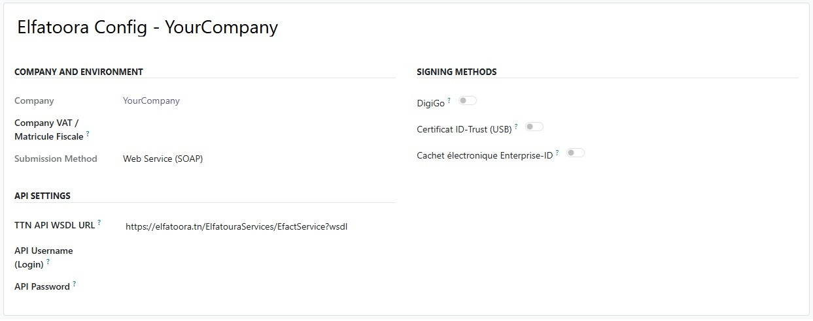

This module is the shared foundation for Elfatoora: it builds TEIF XML, handles XAdES signature preparation and verification, tracks submissions to the platform, and exposes invoice-level fields and menus under Accounting. Signing is done through a pluggable provider pattern — install a companion addon (for example DigiGo) to connect a concrete signature service.
Intended for environments that must align with Tunisian e-invoicing workflows and TTN-related processes.
Developed by Digi-ERP
Open Accounting → Configuration → Elfatoora → Settings to enter platform credentials, environment options, and signing-related defaults used by TEIF generation and TTN submission.
After installing a signing provider addon, additional fields may appear on the same form.

1. Install this base module.
2. Open Accounting → Configuration → Elfatoora → Settings and fill platform credentials and options.
3. Install a signing provider addon (for example Elfatoora TTN - DigiGo) if you use DigiGo.
4. Configure signing and test on a non-production database first.
Odoo 19.0
For any support, contact us:
contact@digi-it.com.tn